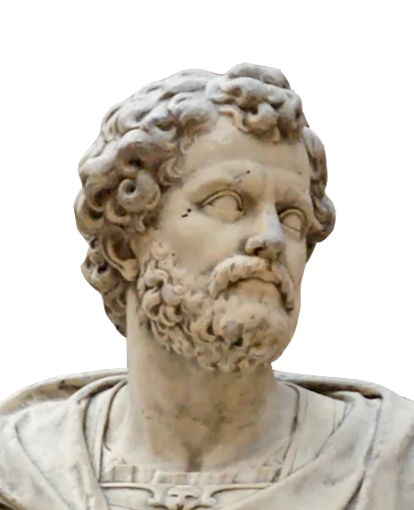
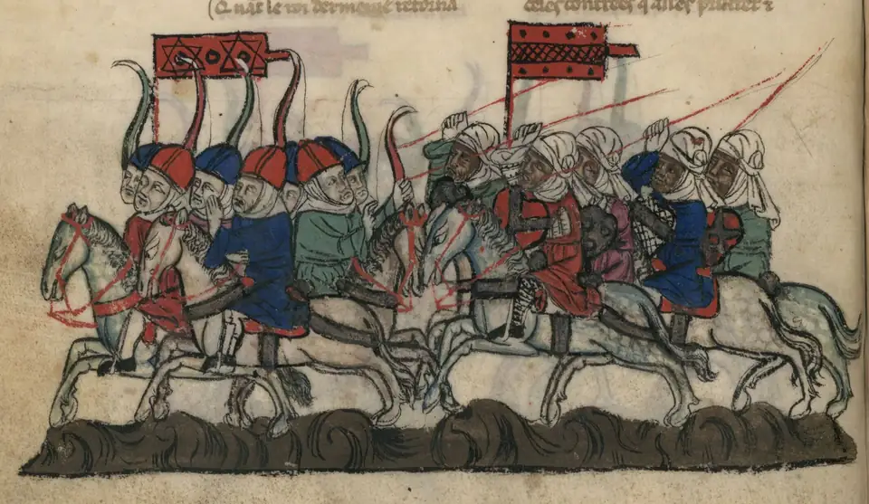
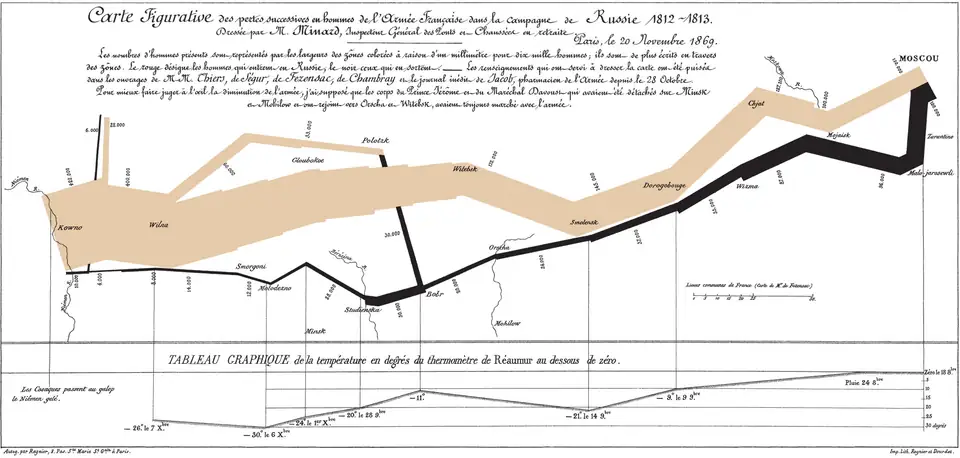
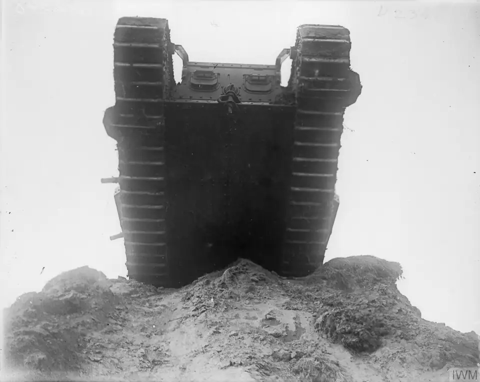

Une armée peut perdre une bataille et gagner la guerre. Elle peut aussi posséder des machines impressionnantes sans obtenir la paix qu’elle recherche. Entre ces deux constats se cache une histoire moins simple que celle d’une succession d’armes toujours plus puissantes.
De Cannes à l’Ukraine, comment les innovations technologiques, les tactiques, les stratégies et la logistique ont-elles transformé la conduite des guerres depuis l’Antiquité ? Six étapes permettent d’examiner les liens entre les outils, les organisations et les ressources. Elles ne constituent pas une histoire exhaustive de tous les conflits : ce sont des cas pour comprendre un mécanisme récurrent, celui de l’adaptation.
Une innovation ne garantit pas la victoire. Son efficacité dépend des tactiques, du commandement, des communications et de la capacité à produire et à ravitailler. L’adversaire apprend lui aussi. La puissance d’une arme doit donc être replacée dans l’organisation d’une armée, les ressources d’une société et les objectifs politiques de la guerre.
Les repères de la frise désignent des cas d’étude, pas des dates d’invention.
01 / EXPLORER LE TEMPS
Six périodes, une même question
216 av. J.-C.
Coordonner les forces
Adaptation : Combiner infanterie et cavalerie. Exemple : Cannes.
Une manœuvre réussie ne détruit pas nécessairement les ressources politiques de l’adversaire.
XIIIe siècle
Mobilité de la cavalerie
Adaptation : Organiser les unités et recueillir l’information. Exemple : Les conquêtes mongoles.
La vitesse repose sur des hommes, des chevaux et une organisation ; elle rencontre les contraintes des milieux.
XVe–XVIIe siècles
Développement de l’artillerie
Adaptation : Adapter les enceintes et financer les sièges. Exemple : Les fortifications bastionnées.
La poudre est bien antérieure : ces siècles désignent une transformation des fortifications européennes.
1812 / XIXe siècle
Chemin de fer et télégraphe
Adaptation : Relier les dépôts et coordonner les transports. Exemple : Russie (1812), Abyssinie (1868).
Le rail élargit les possibilités sans remplacer la marche, les animaux ou les navires.
1916–1945
Chars et moyens de détection
Adaptation : Coordonner les armes et protéger les convois. Exemple : Amiens (1918), Atlantique (1939–1945).
Les machines dépendent de la production, de la maintenance et du ravitaillement.
Depuis 2014 ; invasion de 2022
Emploi massif des drones
Adaptation : Adapter les communications et les contre-mesures. Exemple : La guerre en Ukraine.
L’innovation et les réponses adverses se transforment continuellement.
01 / ANTIQUITÉComment organiser une armée efficace ?
En 216 av. J.-C., à Cannes, dans le sud de l’Italie, Rome subit une défaite écrasante face à Hannibal. Pourtant, les Romains ne découvrent pas une arme inconnue. Le choc oppose des forces dont l’efficacité dépend de leur disposition, de leur coordination et des décisions prises pendant le combat. L’équipement ne suffit donc déjà pas à expliquer le résultat.
Selon Polybe, Hannibal place au centre une partie de ses fantassins ibères et celtes, avec des unités africaines sur les côtés. Sous la pression romaine, le centre recule ; les troupes des ailes peuvent alors attaquer les flancs des légionnaires, tandis que la cavalerie carthaginoise contribue à leur encerclement. La masse romaine, qui semblait être une force, devient un handicap lorsque les hommes n’ont plus l’espace nécessaire pour manœuvrer. Ce récit éclaire l’importance des rapports entre les différentes parties d’une armée. [1]
Mais les flèches nettes des cartes modernes peuvent donner une fausse impression de certitude. Polybe écrit après les événements : nous ne disposons ni d’un enregistrement des mouvements ni d’un relevé minute par minute. L’enchaînement précis, les intentions des chefs et les effectifs demandent une lecture critique. Même le choix du lieu renvoie aux ressources : Polybe associe Cannes à des réserves de vivres utilisées par les Romains. Combattre, c’est aussi pouvoir manger. [1]

Sébastien Slodtz représente Hannibal après Cannes. Cette sculpture moderne, conservée au Louvre (MR 2093), n’atteste ni son apparence réelle ni le déroulement de la bataille.
Œuvre : Sébastien Slodtz, 1704, domaine public. Photographie : Alain08, d’après Jastrow (2008) ; recadrage Commons par Gog the Mild (2020) ; conversion WebP THOT. Notice et droits · Photographie et version WebP : CC BY-SA 3.0..png){kind=link}
La tactique concerne ici la conduite d’un combat. La stratégie relie les opérations aux objectifs de la guerre. Gagner une bataille peut servir cet objectif sans suffire à l’atteindre.
Hannibal espère détacher de Rome ses alliés italiens. Certaines communautés changent de camp, mais le système romain ne s’effondre pas entièrement. Les choix locaux dépendent des rivalités politiques, des intérêts économiques et des relations avec Rome, comme le souligne Michael P. Fronda. La mobilisation et le maintien d’une partie des alliances permettent de poursuivre la guerre. Rome finit par la remporter : Cannes montre ainsi qu’une réussite sur le champ de bataille ne supprime pas automatiquement la capacité d’un adversaire à reconstituer ses forces et à tenir dans la durée. [2]
Trois fonctions complémentaires : agir ensemble, entretenir l’armée, renouveler ses ressources. Ce schéma conceptuel ne reconstitue pas Cannes.
02 / MOYEN ÂGELa mobilité peut-elle devenir une force décisive ?
Au XIIIe siècle, les conquêtes mongoles déplacent la question. Comment des armées issues des sociétés de la steppe peuvent-elles conquérir des territoires aussi divers ? Le cavalier archer est un élément essentiel de leur puissance : il peut se déplacer et combattre à distance. Mais résumer leurs succès au cheval ou à l’arc ferait disparaître ce qui donne à ces moyens leur efficacité collective.
L’organisation compte autant que la mobilité. Timothy May décrit une armée structurée selon un système décimal, qui permet d’intégrer des hommes de différentes origines dans de nouvelles unités. Le combattant appartient à une chaîne de commandement plus large que son groupe d’origine. Cette organisation rend possible l’action coordonnée d’ensembles dispersés : aller vite n’a de sens que si les différentes forces peuvent contribuer à une même opération. [3]
Il faut aussi savoir où aller. Le renseignement sur les routes, les adversaires et les ressources, ainsi que la transmission des ordres, donnent une utilité militaire à la vitesse. Celle-ci ne fait pas disparaître les besoins matériels : les chevaux doivent être entretenus et nourris. Les pâturages, les saisons et le terrain influencent les déplacements. Une méthode très efficace en espace ouvert ne peut être transposée sans adaptation face à une ville fortifiée ou dans un milieu qui gêne la cavalerie.
Les Mongols ne restent d’ailleurs pas enfermés dans un modèle unique. Ils apprennent à administrer les territoires conquis et intègrent des savoir-faire extérieurs. Les ingénieurs et les techniques de siège, notamment chinois, contribuent à élargir leurs capacités. Columbia rappelle que les armées mongoles adoptent des armes à poudre et les spécialistes capables de les utiliser : la conquête produit aussi des transferts techniques, souvent contraints. [4] [5]

La bataille de 1281 est représentée après les faits. L’image documente une façon médiévale de raconter le combat, pas la disposition exacte des unités.
Auteur inconnu · Fleur des histoires de la terre d’Orient · BnF, NAF 886, f. 27v · domaine public · Notice et droits
Cette capacité d’adaptation n’implique aucune invincibilité. L’étendue des territoires, les résistances locales et les contraintes du milieu limitent les opérations. Elle ne doit pas davantage masquer le coût humain des conquêtes : destructions de villes, massacres et bouleversements des populations accompagnent l’expansion. Les échanges culturels ultérieurs, étudiés par le Metropolitan Museum, ne peuvent effacer cette violence. Comprendre une organisation militaire n’est pas célébrer ses conséquences. [4]
03 / ÉPOQUE MODERNEPourquoi les canons transforment-ils les fortifications ?
Une innovation peut aussi changer la forme des lieux où l’on combat. En Europe, le développement de l’artillerie contribue à transformer les enceintes. Mais cette histoire ne commence pas avec les canons européens : la poudre a des origines chinoises. Le Wujing zongyao, compilé en 1044 sous les Song, conserve des formules et décrit des usages militaires. Cette date atteste un savoir déjà constitué ; elle ne désigne pas le jour où quelqu’un aurait soudain inventé toutes les armes à feu. [5]
Les techniques se diffusent progressivement, changent d’usage et se perfectionnent. Entre compositions incendiaires, projectiles explosifs et artillerie à tube, il existe une histoire faite d’expérimentations. Leur circulation ne signifie pas que toutes les armées disposent simultanément des mêmes équipements ni qu’elles savent immédiatement les employer de la même façon.
Les hautes murailles peuvent être fragilisées par des bombardements répétés. Les défenseurs modifient alors les profils, renforcent les ouvrages et prévoient des emplacements pour leurs propres canons. Dans les fortifications bastionnées de l’époque moderne, les angles saillants permettent de couvrir les approches et de tirer le long des murs voisins. Les bastions se protègent mutuellement : la défense devient un système dont les parties doivent fonctionner ensemble. [6] [7]
02 / COMPARER LES DÉFENSES
Du mur vertical au système bastionné
Enceinte médiévale
Vue de profil : tours et courtine haute.
Principe : hauteur, obstacles et tours pour surveiller les approches et défendre les murs. Ces enceintes connaissent elles-mêmes de nombreuses variantes.
Fortification bastionnée
Vue en plan : bastions angulaires reliés par les courtines ; traits verts pour le flanquement.
Adaptation : ouvrages généralement plus bas et renforcés de terre ; bastions pour couvrir les courtines par des tirs latéraux. Le plan complète le profil précédent : les dimensions ne sont pas comparées.
Schémas originaux THOT, 2026, sans échelle ni dimensions. Modèles explicatifs, sans reconstitution d’un site précis.
Il n’y a pourtant pas de remplacement instantané de tous les châteaux par des étoiles parfaites. Des ouvrages anciens sont adaptés ; des formes différentes coexistent selon le relief, les menaces et les moyens disponibles. Pendennis, en Angleterre, fournit un exemple patrimonial de ce développement des bastions à la fin du XVIe siècle. Vauban appartient à une histoire déjà ancienne : il ne crée pas à lui seul le principe de la fortification bastionnée. [6] [7]
La transformation impose aussi des choix matériels. Il faut financer les travaux, mobiliser des ouvriers et entretenir les places. Du côté de l’attaque, déplacer des canons, assurer les munitions et nourrir les troupes pendant un siège demande une organisation durable. La puissance d’un projectile ne remplace ni les moyens de l’acheminer ni le temps nécessaire pour conduire l’opération. Attaque et défense se transforment ensemble, chacune répondant aux possibilités de l’autre.
04 / XVIIIe–XIXe SIÈCLESComment déplacer et nourrir des armées immenses ?
En 1812, Napoléon envahit la Russie avec une armée dont les besoins dépassent de très loin la seule question des armes. Il faut faire avancer les soldats, mais aussi les vivres, les équipements et les moyens de transport. Les préparatifs sont importants : Pierre Branda décrit les réserves, les fourgons, les animaux et l’effort financier nécessaires. L’échec ne peut donc se raconter comme une absence totale de préparation. [8]
Prévoir des stocks ne garantit cependant pas leur arrivée au bon endroit. À mesure que les troupes avancent, les distances s’allongent et l’acheminement devient plus difficile. Les hommes et les animaux consomment les ressources qu’ils transportent ou trouvent sur place. Les marches, les maladies et les combats affaiblissent l’armée ; les choix de l’adversaire et les ressources disponibles sur le terrain compliquent encore son ravitaillement.
La prise de Moscou ne provoque pas la paix attendue. Pendant la retraite, le froid aggrave une situation déjà dégradée. L’explication par le seul « hiver russe » efface ainsi les difficultés rencontrées avant les grands froids et la capacité russe à poursuivre la résistance. La lecture de Marie-Pierre Rey met la campagne en relation avec les décisions politiques et militaires : prendre une ville, même prestigieuse, ne revient pas à obtenir la soumission d’un État. [9]

Minard met en relation déplacements, effectifs et températures de la retraite. Le rétrécissement avant Moscou aide à dépasser l’explication par le seul froid. Cette synthèse tardive n’établit pas à elle seule la cause de chaque perte ; consulter la notice pour lire le document original.
Charles-Joseph Minard · 20 novembre 1869 · reproduction Wikimedia Commons · domaine public · Notice et droits
Au XIXe siècle, le chemin de fer transforme le transport de forces et de ressources sur de longues distances, tandis que le télégraphe accélère les échanges d’informations. Mais leurs avantages sont liés aux réseaux disponibles. Une voie doit être construite, approvisionnée et entretenue ; un message rapide ne crée pas un convoi et ne répare pas une route. L’arrivée au terminus ouvre encore un dernier trajet jusqu’aux unités.
03 / COMPARER LES TRANSPORTS
Acheminer davantage, puis franchir le dernier trajet
Des transports complémentaires
La marche, les animaux, les chariots et les voies navigables permettent de combiner plusieurs itinéraires. Ils dépendent des routes, des cours d’eau et des ressources locales ; les animaux consomment eux aussi du fourrage.
Un réseau, puis le dernier trajet
Le rail concentre les flux entre des points reliés. Il impose des gares, du matériel et des voies utilisables. Au-delà du réseau, les autres transports continuent : les anciens moyens complètent les nouveaux.
Représentations conceptuelles originales THOT, 2026. Ni échelle ni comparaison chiffrée de vitesse ou de capacité.
L’expédition britannique en Abyssinie, en 1868, associe ainsi navires, installation portuaire, court chemin de fer côtier, télégraphe et transports animaux. Le rail ne rejoint pas magiquement la forteresse de Magdala dans les montagnes. Le succès dépend aussi des accords de passage conclus avec des adversaires de Tewodros II. Il s’agit d’une intervention impériale, menée par des troupes britanniques et indiennes, suivie du pillage de Magdala : l’exemple illustre une combinaison logistique et politique, pas une supériorité technique universelle. [10]
05 / XXe SIÈCLEComment s’adapter à la guerre industrielle ?
La Première Guerre mondiale rend particulièrement visible le décalage entre puissance de feu et capacité à avancer. Artillerie et mitrailleuses rendent les attaques meurtrières ; les tranchées offrent une protection et s’intègrent à des réseaux défensifs. Ce front n’est pourtant pas figé dans ses méthodes. Les armées modifient les préparations d’artillerie, la circulation de l’information et les relations entre unités. L’apprentissage se fait au prix de pertes humaines immenses.
Les chars, employés au combat à partir de 1916, cherchent notamment à aider la progression sur un terrain battu par le feu. Leur seule présence ne suffit pas : il faut les acheminer, les entretenir et coordonner leur action avec celle des soldats et de l’artillerie. Une photographie permet d’observer la machine, mais pas de mesurer automatiquement son efficacité. [21]
04 / LIRE UNE SOURCE
Un char dans l’image : que sait-on vraiment ?

La notice porte un titre lié à Cambrai (novembre–décembre), mais date cette prise de vue du 21 octobre. Elle ne doit donc pas être présentée comme une photographie de la bataille d’Amiens ni comme la preuve d’un assaut en cours.
John Warwick Brooke · Imperial War Museums, Q 6284 · Ministry of Information First World War Official Collection · domaine public (Crown Copyright expiré) · Notice et droits
Formulez d’abord votre réponse, puis ouvrez l’explication. Aucun score : il s’agit de distinguer trois niveaux de lecture.
1. Qu’observe-t-on directement ?
Observation : un véhicule blindé à chenilles vu de face, sur un terrain découvert. La forme des chenilles est visible. « Mark IV », le nom du lieu et la date viennent de la notice, pas d’une information lisible dans l’image.
2. Que peut-on raisonnablement en déduire ?
Interprétation : les larges chenilles suggèrent un véhicule conçu pour se déplacer sur des sols difficiles. La connaissance historique des chars appuie cette lecture, mais la photographie ne montre pas ce véhicule franchissant une tranchée.
3. Que ne peut-on pas établir avec cette seule image ?
Limites : la vitesse, l’état mécanique, le vécu de l’équipage et le résultat d’un combat restent inconnus. L’absence d’un adversaire dans le cadre ne prouve pas son absence à proximité. Une photographie de guerre est un point de vue, pas le bilan d’une opération.
Le 8 août 1918, à Amiens, l’attaque alliée montre l’intérêt d’un emploi coordonné de l’infanterie, de l’artillerie, des chars et de l’aviation. La surprise et l’organisation contribuent à l’avance. Ce n’est pas l’apparition soudaine d’une arme qui expliquerait à elle seule le résultat, mais une combinaison de moyens et d’apprentissages. Les limites logistiques restent décisives : les offensives allemandes du printemps avaient déjà montré combien une avance pouvait s’épuiser faute de transports suffisants pour la soutenir. [11] [12]
Pendant la Seconde Guerre mondiale, la bataille de l’Atlantique pose la même question à l’échelle d’un océan. Les sous-marins allemands menacent les navires qui acheminent hommes, nourriture, carburants et matériel. Les convois regroupent les bâtiments marchands sous protection d’escortes. Radar, sonar, aviation et coordination de l’information renforcent progressivement cette défense. Aucun de ces moyens ne suffit isolément : détecter une menace doit permettre d’agir à temps, et les navires de ravitaillement doivent finalement atteindre leurs ports. [22] [13]
La guerre du Vietnam rappelle enfin qu’une supériorité en aviation, en artillerie ou en équipements ne garantit pas l’objectif politique recherché. Lors de l’offensive du Têt en 1968, les forces américaines et sud-vietnamiennes repoussent les attaques, mais celles-ci contribuent à ébranler le soutien américain à la guerre. Un résultat militaire immédiat et ses conséquences politiques peuvent donc diverger. Bombardements, destructions, déplacements et pertes civiles imposent aussi de regarder ces guerres du point de vue des sociétés qui les subissent. [14]
06 / XXIe SIÈCLELes drones ont-ils révolutionné la guerre ?
Le conflit en Ukraine commence en 2014, avec l’annexion de la Crimée par la Russie et la guerre dans le Donbass. L’invasion russe à grande échelle débute le 24 février 2022. Distinguer ces étapes évite de faire disparaître les années précédentes. Le recours massif aux drones est devenu l’un des traits marquants de cette guerre, mais ces appareils ne sont pas nés en 2022 et ne constituent pas une catégorie homogène. [19]
Certains contribuent à observer et à transmettre de l’information ; d’autres sont employés pour frapper. Leur intérêt dépend des communications, de l’interprétation des images et de leur intégration aux autres moyens militaires. Une information recueillie ne devient utile que si elle parvient aux bonnes personnes, peut être évaluée et contribue à une décision. L’artillerie, les moyens de transport et le commandement restent donc présents derrière l’image spectaculaire d’un appareil en vol. [15] [16]
Ces fonctions sont interdépendantes. Ce schéma conceptuel ne décrit ni une procédure d’emploi ni une opération particulière.
La guerre électronique cherche notamment à perturber certaines communications et certains signaux. Les armées développent en retour d’autres équipements et des contre-mesures. Cette confrontation oblige à réviser les usages : un dispositif efficace à un moment donné peut perdre de son intérêt face à une réponse adverse. L’innovation est un processus continu, qui concerne aussi l’organisation, la formation et la rapidité avec laquelle les expériences remontent du terrain. [16] [17]
Il faut pouvoir produire, réparer et remplacer les appareils, disposer de composants et former les personnels. [20] L’importance industrielle des drones ne fait donc pas disparaître la logistique : elle lui ajoute de nouvelles exigences. Les analyses recueillies par l’IHEDN le 19 février 2026 insistent sur ce lien entre emploi, production et adaptation. Ce sont des lectures d’experts d’un conflit en cours ; elles ne doivent pas être transformées en lois universelles sur toutes les guerres à venir. [15]
L’emploi massif des drones et les adaptations qu’il suscite sont documentés. Leur poids relatif dans une issue stratégique, la durabilité d’une contre-mesure et les leçons applicables à d’autres théâtres restent des objets d’analyse. Cette synthèse s’appuie sur des publications de 2025–2026, vérifiées le 27 octobre 2026 ; elle ne constitue pas un suivi opérationnel en temps réel.
Les ressources humaines et les conséquences civiles demeurent centrales. Human Rights Watch documente, dans son rapport 2026 portant sur 2025, les atteintes aux populations et aux infrastructures, notamment dans les attaques de drones. Une machine qui éloigne son opérateur du danger ne fait pas disparaître la violence pour ceux qui se trouvent au sol. Les innovations transforment les moyens de combattre ; elles ne rendent ni la victoire rapide ni la protection des civils automatiques. [18]
Ce qui change, ce qui demeure
Les équipements ont profondément transformé les possibilités de combattre. Mais l’histoire ne suit pas une échelle où chaque nouvelle arme rendrait toutes les précédentes inutiles. Les canons appellent de nouvelles défenses ; les convois associent organisation et détection ; les drones imposent des adaptations que leurs adversaires cherchent aussitôt à contourner.
Le commandement, l’information, la logistique et la coordination relient ces épisodes. Une armée doit comprendre une situation, faire agir ses forces ensemble et continuer à les entretenir. Elle doit surtout relier ses moyens à un objectif politique, face à un adversaire capable d’apprendre. Ces continuités expliquent pourquoi la nouveauté technique peut transformer la guerre sans suffire à la gagner.
Les technologies futures transformeront-elles seulement les moyens de faire la guerre, ou changeront-elles plus profondément les décisions humaines qui la gouvernent ?
Bibliographie et références
Sources et notices vérifiées le 27 octobre 2026. Les résumés éditoriaux des ouvrages en accès restreint sont distingués des textes consultés. Les références contemporaines sont datées ; les entretiens et analyses ne constituent pas des bilans définitifs.
Antiquité
- Polybe, Histoires, III, 107–118, traduction W. R. Paton, Loeb, 1922. Récit antique postérieur aux faits.
- Michael P. Fronda, Between Rome and Carthage: Southern Italy during the Second Punic War, Cambridge University Press, 2010. Notice et résumé consultés ; ouvrage intégral non consulté.
Moyen Âge
- Timothy May, « The Military Machine », The Cambridge History of the Mongol Empire, vol. I, 2023, p. 460–487 ; en ligne le 1er janvier 2024. Résumé éditorial consulté ; chapitre intégral en accès restreint.
- Qamar Adamjee et Stefano Carboni, « The Legacy of Genghis Khan », Metropolitan Museum of Art, 1er octobre 2003.
Poudre et fortifications
- Columbia University, Asia for Educators, « Technological Advances during the Song: Gunpowder », sans date.
- Historic England, Artillery Defences, Introduction to Heritage Assets, 2018.
- English Heritage, « Significance of Pendennis Castle », section The Elizabethan Fortress, sans date.
Napoléon et XIXe siècle
- Pierre Branda, « 1812, l’année de tous les défis », Fondation Napoléon. Préparatifs financiers et matériels.
- Marie-Pierre Rey, « 1812 – la campagne de Russie », préface au vol. 12 de la Correspondance générale de Napoléon Bonaparte, Fondation Napoléon.
- National Army Museum, « Abyssinia Expedition », sans date. Transports, accords de passage et pillage.
XXe siècle
- National Army Museum, « 1918: Year of victory », sans date. Apprentissage tactique et limites logistiques.
- Australian War Memorial, « The Battle of Amiens: 8 August 1918 », sans date.
- Smithsonian National Museum of American History, « Battle of the Atlantic », exposition The Price of Freedom, sans date.
- Office of the Historian, US Department of State, « U.S. Involvement in the Vietnam War: The Tet Offensive, 1968 », sans date. Perspective institutionnelle américaine.
Ukraine · analyses datées
- IHEDN, « Ukraine–Russie : quand la guerre des drones redéfinit le champ de bataille », 19 février 2026. Entretiens avec Grégoire de Saint-Quentin, Mat Hauser et Ronald Hatto ; analyses d’experts.
- Matthew Slusher, Lessons from the Ukraine Conflict: Modern Warfare in the Age of Autonomy, Information, and Resilience, CSIS, 2 mai 2025. Analyse à distinguer des faits établis. Résumé éditorial consulté.
- Ministère des Armées, « [Décryptage] La dronisation du champ de bataille », 26 octobre 2026. Présentation institutionnelle des adaptations françaises.
Ukraine · repères historiques
Ukraine · industrie et ressources
XXe siècle · premiers chars
XXe siècle · détection
Ukraine · conséquences civiles
Crédits photographiques et documentaires
Les quatre reproductions documentaires sont conservées localement, sans retouche du sujet, après conversion WebP. Les notices individuelles et les empreintes des fichiers accompagnent cette version. Les légendes identifient les limites documentaires.
- Hannibal : Sébastien Slodtz, 1704, Louvre MR 2093 ; œuvre dans le domaine public. Photographie Alain08, d’après Jastrow, recadrage Commons ; CC BY-SA 3.0 pour la photographie et sa conversion WebP. Voir la légende pour la notice.
- Homs : miniature anonyme du XIVe siècle, BnF, NAF 886, f. 27v ; reproduction et notice Commons, domaine public (œuvre ancienne, reproduction fidèle).
- Campagne de Russie : Charles-Joseph Minard, 20 novembre 1869 ; reproduction et notice Commons, domaine public (œuvre ancienne, reproduction fidèle).
- Char Mark IV : John Warwick Brooke, Wailly, 21 octobre 1917 ; Imperial War Museums, Q 6284 ; reproduction et notice Commons, domaine public, Crown Copyright expiré selon la notice. La notice IWM directe n’a pas été accessible lors de cette vérification ; les métadonnées Commons ont été archivées.
- Schémas des chapitres 1, 3, 4 et 6 et couverture sociale : créations pédagogiques THOT, 2026. Ils ne constituent pas des documents anciens ni des reconstitutions certaines. Aucun document historique n’a été généré par IA.
Les schémas originaux complètent les documents réutilisables : aucun visuel aux droits incertains n’a été ajouté pour remplir un chapitre.